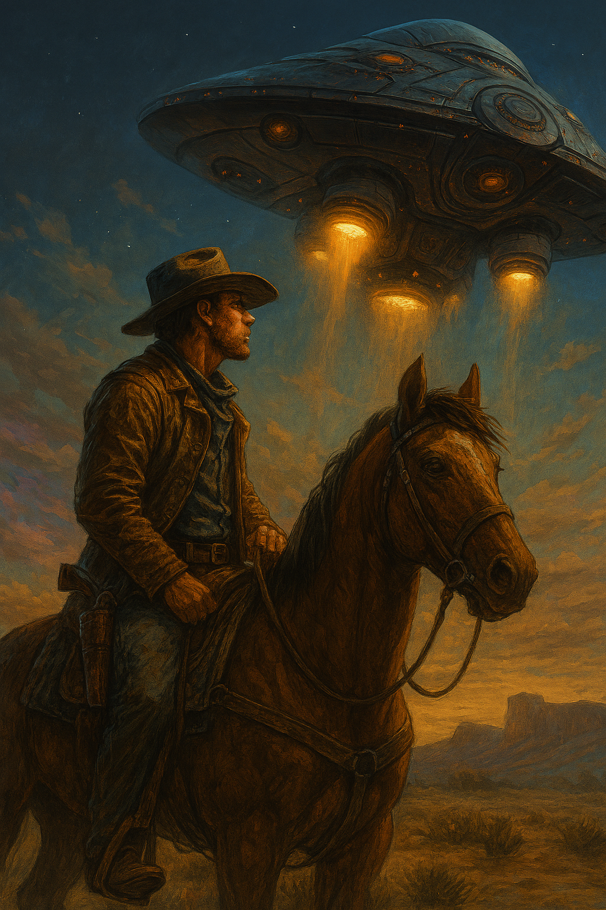

Buck Remington and the Scavenger’s Signal
Posted on November 9, 2025 · Category: TAOLB Stories

Buck Remington had seen strange things in his time sandstorms that whispered names, moons that blinked like eyes but nothing quite like the ship that landed behind the canyon ridge at dusk.
It didn’t roar. It hummed. Low and steady, like a tired engine trying not to wake the stars.
The Crew That Crawled Out
Three figures stepped into the dust. Not soldiers. Not merchants. Scavengers. Their suits were patched with wire and rust, their boots mismatched, their eyes sharp with hunger—not for food, but for something else. Opportunity. Risk. Maybe redemption.
The leader, a wiry woman named Vex, spoke first.
"You’re Buck Remington, right? Heard you can track a ghost across gravel."
Buck didn’t answer. He just squinted at the ship, then at the sky.
"We need a guide," Vex said. "Something old crashed in the Black Belt. We think it’s still breathing."
Buck spat into the dust. “If it’s breathing, it’s dangerous.”
Vex grinned. “That’s why we came to you.”
The Deal
They didn’t offer credits. They offered a map. A half burned parchment with coordinates scribbled in alien ink. Buck didn’t recognize the language, but he recognized the shape an old mining route, long abandoned, rumored to be cursed.
He took the job.
Not for the scavengers. Not for the map.
For the feeling in his gut that something was waiting out there. Something that remembered his name.
Closing Thoughts
Buck Remington didn’t trust scavengers. But he trusted the stars. And when they whispered, he listened.
The ship lifted off at midnight. Buck didn’t look back.
Some adventures don’t start with a bang. They start with a hum.
Want more Buck?
Get new TAOLB stories delivered weekly featuring Buck, Lukey, and the wild worlds they explore. Emotional growth, expressive learning, and cosmic grit await.
📬 Get Free Weekly Stories